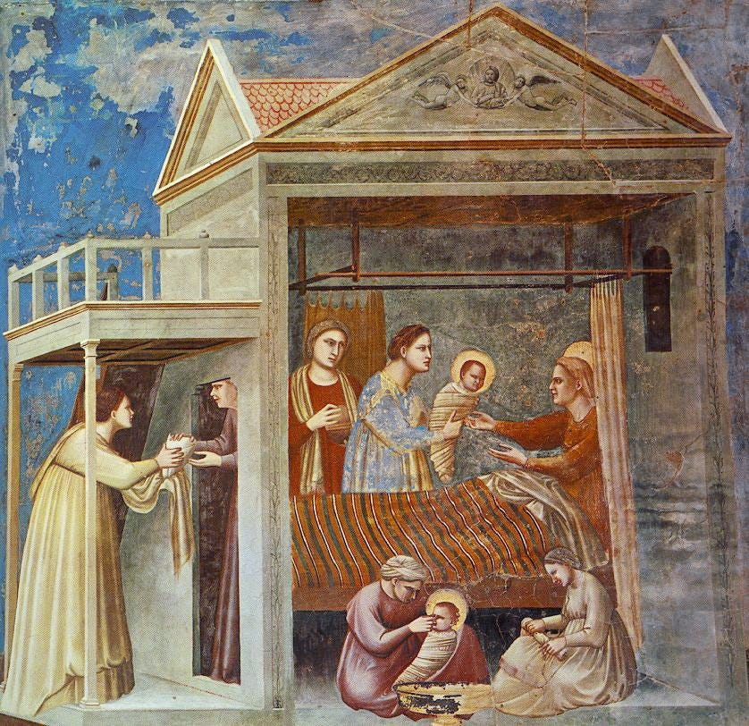
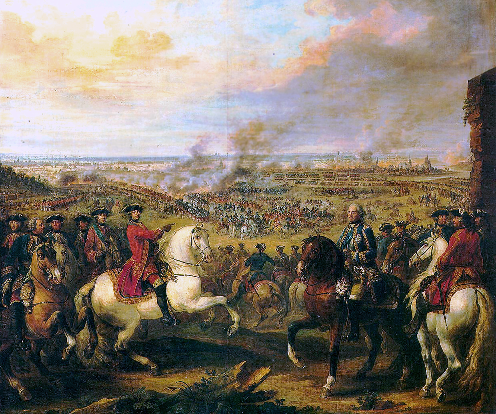
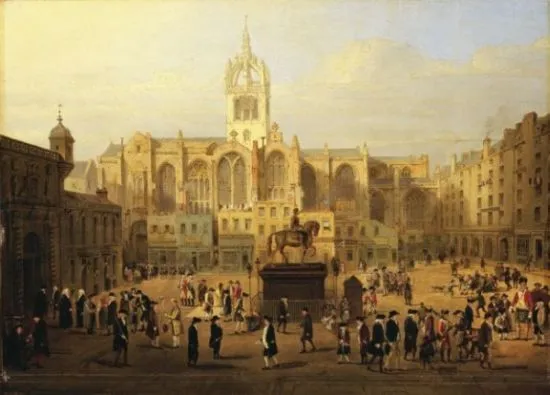

Ancient Beginnings & Clans
Long before modern borders, Scotland was home to the Picts, Celts, and Romans. Over centuries, a unique clan system formed in the Highlands, where families held deep loyalty to their chieftains, territory, and tartans.
Scotland's past is a story of ancient tribes, legendary battles for independence, and groundbreaking intellectual discoveries that shaped the modern world.

Long before modern borders, Scotland was home to the Picts, Celts, and Romans. Over centuries, a unique clan system formed in the Highlands, where families held deep loyalty to their chieftains, territory, and tartans.

Scotland fought fierce wars to preserve its sovereignty, producing historic heroes like William Wallace and Robert the Bruce. Later, during the 17th and 18th centuries, the Jacobite uprisings culminated in the tragic Battle of Culloden in 1746.

In the 18th century, Scotland became an intellectual powerhouse. Thinkers, scientists, and writers like Adam Smith, David Hume, and Sir Walter Scott spearheaded innovations in philosophy, economics, engineering, and literature.